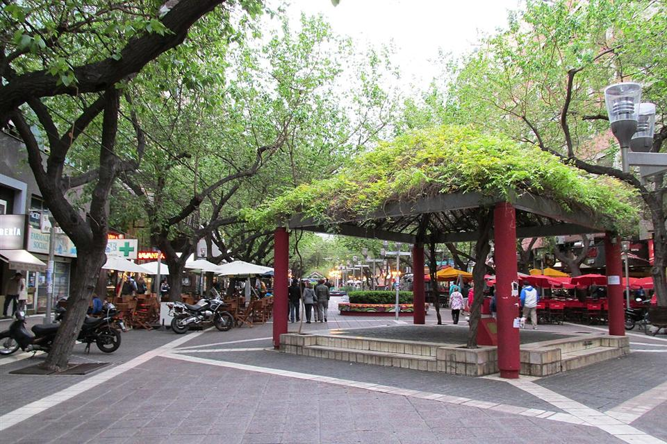
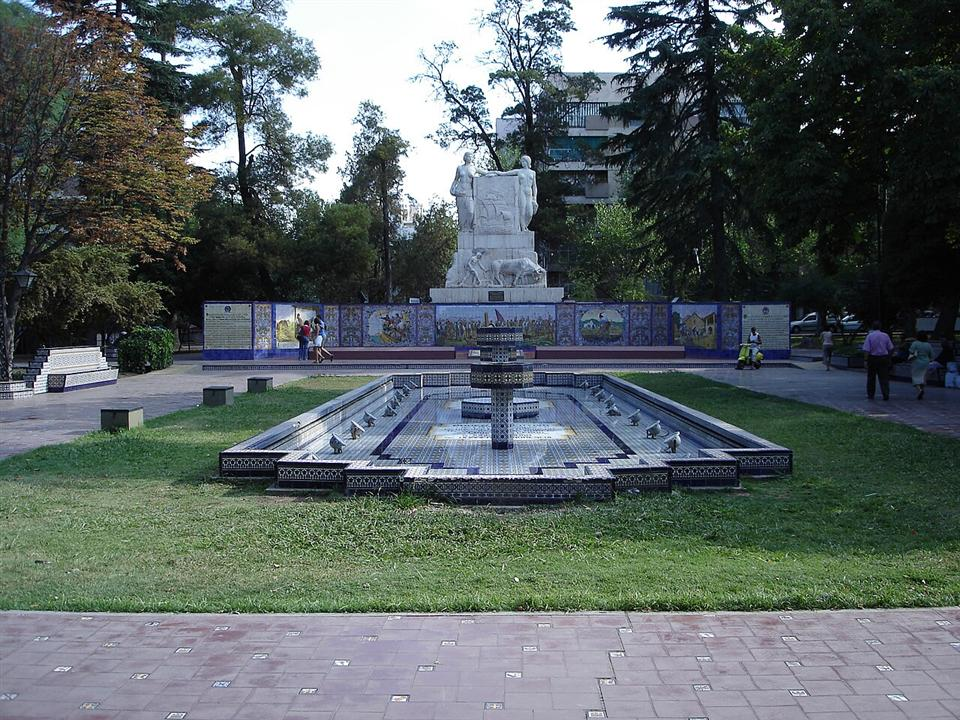

Encuesta vecinal abierta: 5 preguntas
Partido Justicialista de Capital, Mendoza
Afiliate online con firma digital, consultá el padrón y seguí el trabajo del partido en las 12 secciones de la Ciudad de Mendoza.

Noticias del PJ Capital. Lo nuevo en el partido y en el sitio.

Abre la afiliación online con firma digital
Cualquier vecino de la Capital puede afiliarse desde el celular, sin papeles y en pocos minutos.

Lanzamos la encuesta vecinal por sección
Cinco preguntas para saber qué preocupa en cada barrio: inseguridad, sueldos, salud, la justicia y más.

Reunimos los teléfonos útiles de la Capital
Emergencias, la Línea 144, ANSES, PAMI y salud en un solo lugar, para llamar con un toque.
Padrón de afiliados
Buscá por DNI o por apellido para saber si figurás en el padrón y en qué sección votás en las internas.

Habitantes de las 12 secciones
Tocá una sección del mapa o de la lista para ver cuántos vecinos viven en ella.
Total de la Capital
—
Las tres banderas
Justicia social, independencia económica y soberanía política: las tres banderas del peronismo guían el trabajo del partido en cada sección de la Capital.
Encuesta vecinal. Qué le preocupa a la Capital.
Lo que más preocupa
Porcentaje de vecinos que eligió cada tema; cada uno elige hasta 3.
Teléfonos útiles de la Capital. Tocá el número para llamar.
La afiliación en tres pasos
-
Tus datos: nombre, apellido y DNI
Los mismos que figuran en tu documento, sin puntos en el número.

-
Tu domicilio en la Capital
Calle, número y la sección donde vivís. La afiliación es para vecinos de la Ciudad de Mendoza.

-
Tu firma digital y el acuerdo
Firmás con el dedo o el mouse, leés el acuerdo de adhesión y enviás la solicitud.
Ficha de afiliación al PJ Capital
Para vecinos con domicilio en la Ciudad de Mendoza. La afiliación es gratuita.
Comisión partidaria
Presidente